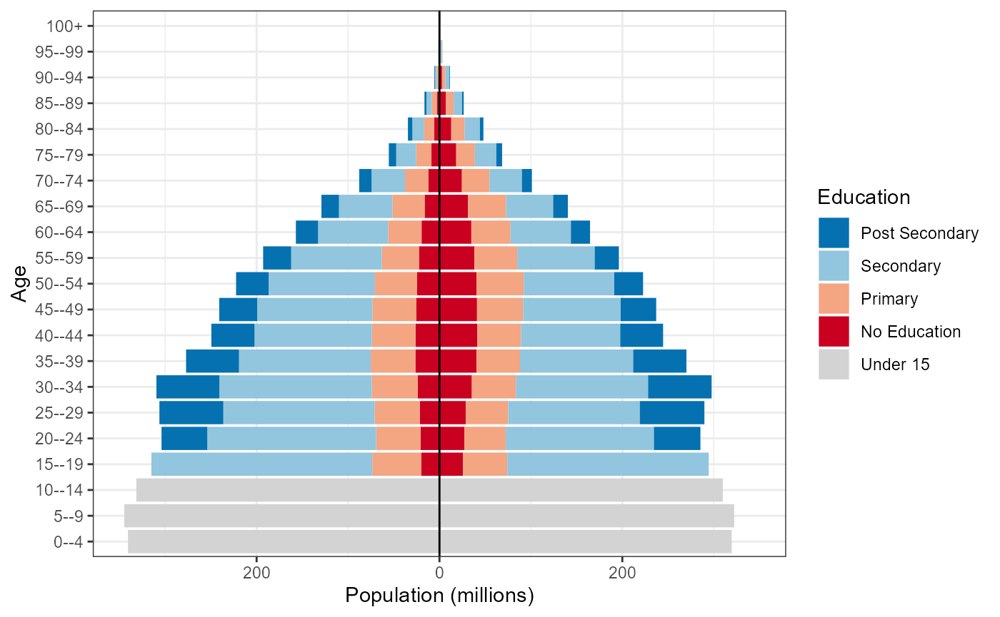
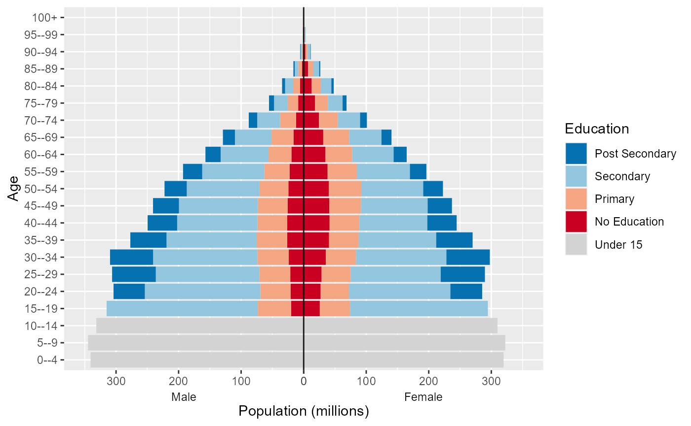

Overview of the wcde package
Guy J. Abel, Samir K.C., Michaela Potancokova, Claudia Reiter, Andrea Tamburini and Dilek Yildiz
Source:vignettes/wcde.Rmd
wcde.Rmd
The wcde package allows for R users to easily download
data from the Wittgenstein
Centre for Demography and Human Capital Data Explorer as well as
containing a number of helpful functions for working with education
specific demographic data.
Installation
You can install the released version of wcde from CRAN with:
install.packages("wcde")Install the developmental version with:
library(devtools)
install_github("guyabel/wcde", ref = "main")Getting data into R
The get_wcde() function can be used to download data
from the Wittgenstein Centre Human Capital Data Explorer. It requires
three user inputs
-
indicator: a short code for the indicator of interest -
scenario: a number referring to a SSP narrative, by default 2 is used (for SSP2) -
country_code(orcountry_name): corresponding to the country of interest
library(wcde)
# download education specific tfr data
get_wcde(indicator = "etfr",
country_name = c("Brazil", "Albania"))
#> # A tibble: 204 × 7
#> scenario name country_code education period .groups etfr
#> <dbl> <chr> <dbl> <chr> <chr> <chr> <dbl>
#> 1 2 Brazil 76 No Education 2015-2020 drop_last 2.47
#> 2 2 Albania 8 No Education 2015-2020 drop_last 1.88
#> 3 2 Brazil 76 Incomplete Primary 2015-2020 drop_last 2.47
#> 4 2 Albania 8 Incomplete Primary 2015-2020 drop_last 1.88
#> 5 2 Brazil 76 Primary 2015-2020 drop_last 2.47
#> 6 2 Albania 8 Primary 2015-2020 drop_last 1.88
#> 7 2 Brazil 76 Lower Secondary 2015-2020 drop_last 1.89
#> 8 2 Albania 8 Lower Secondary 2015-2020 drop_last 1.9
#> 9 2 Brazil 76 Upper Secondary 2015-2020 drop_last 1.37
#> 10 2 Albania 8 Upper Secondary 2015-2020 drop_last 1.57
#> # … with 194 more rows
# download education specific survivorship rates
get_wcde(indicator = "eassr",
country_name = c("Niger", "Korea"))
#> # A tibble: 8,976 × 9
#> scenario name country…¹ age sex educa…² period .groups eassr
#> <dbl> <chr> <dbl> <chr> <chr> <chr> <chr> <chr> <dbl>
#> 1 2 Niger 562 Newb… Male No Edu… 2015-… drop_l… 91.6
#> 2 2 Republic of Korea 410 Newb… Male No Edu… 2015-… drop_l… 99.4
#> 3 2 Niger 562 Newb… Male Incomp… 2015-… drop_l… 92
#> 4 2 Republic of Korea 410 Newb… Male Incomp… 2015-… drop_l… 99.5
#> 5 2 Niger 562 Newb… Male Primary 2015-… drop_l… 92.5
#> 6 2 Republic of Korea 410 Newb… Male Primary 2015-… drop_l… 99.5
#> 7 2 Niger 562 Newb… Male Lower … 2015-… drop_l… 93.4
#> 8 2 Republic of Korea 410 Newb… Male Lower … 2015-… drop_l… 99.6
#> 9 2 Niger 562 Newb… Male Upper … 2015-… drop_l… 95.2
#> 10 2 Republic of Korea 410 Newb… Male Upper … 2015-… drop_l… 99.7
#> # … with 8,966 more rows, and abbreviated variable names ¹country_code,
#> # ²educationIndicator codes
The indicator input must match the short code from the indicator
table. The find_indicator() function can be used to look up
short codes (given in the first column) from the
wic_indicators data frame:
find_indicator(x = "tfr")
#> # A tibble: 2 × 3
#> indicator description definition
#> <chr> <chr> <chr>
#> 1 tfr Total Fertility Rate "The average number of children b…
#> 2 etfr Total Fertility Rate by Education "The average number of children b…Temporal coverage
By default, get_wdce() returns data for all years or
available periods or years. The filter() function in dplyr can
be used to filter data for specific years or periods, for example:
library(tidyverse)
get_wcde(indicator = "e0",
country_name = c("Japan", "Australia")) %>%
filter(period == "2015-2020")
#> # A tibble: 4 × 7
#> scenario name country_code sex period .groups e0
#> <dbl> <chr> <dbl> <chr> <chr> <chr> <dbl>
#> 1 2 Japan 392 Male 2015-2020 drop_last 80.7
#> 2 2 Australia 36 Male 2015-2020 drop_last 81.3
#> 3 2 Japan 392 Female 2015-2020 drop_last 87.2
#> 4 2 Australia 36 Female 2015-2020 drop_last 85
get_wcde(indicator = "sexratio",
country_name = c("China", "South Korea")) %>%
filter(year == 2020)
#> # A tibble: 44 × 7
#> scenario name country_code age year .groups sexratio
#> <dbl> <chr> <dbl> <chr> <dbl> <chr> <dbl>
#> 1 2 China 156 All 2020 drop_last 1.06
#> 2 2 Republic of Korea 410 All 2020 drop_last 1
#> 3 2 China 156 0--4 2020 drop_last 1.15
#> 4 2 Republic of Korea 410 0--4 2020 drop_last 1.07
#> 5 2 China 156 5--9 2020 drop_last 1.16
#> 6 2 Republic of Korea 410 5--9 2020 drop_last 1.07
#> 7 2 China 156 10--14 2020 drop_last 1.17
#> 8 2 Republic of Korea 410 10--14 2020 drop_last 1.07
#> 9 2 China 156 15--19 2020 drop_last 1.16
#> 10 2 Republic of Korea 410 15--19 2020 drop_last 1.1
#> # … with 34 more rowsPast data is only available for selected indicators. These can be
viewed using the past indicator column:
wic_indicators %>%
filter(past) %>%
select(1:2)
#> # A tibble: 28 × 2
#> indicator description
#> <chr> <chr>
#> 1 pop Population Size (000's)
#> 2 bpop Population Size by Broad Age (000's)
#> 3 epop Population Size by Education (000's)
#> 4 prop Educational Attainment Distribution
#> 5 bprop Educational Attainment Distribution by Broad Age
#> 6 growth Average Annual Growth Rate
#> 7 nirate Average Annual Rate of Natural Increase
#> 8 sexratio Sex Ratio
#> 9 mage Population Median Age
#> 10 tdr Total Dependency Ratio
#> # … with 18 more rowsThe filter() function can also be used to filter
specific indicators to specific age, sex or education groups
get_wcde(indicator = "sexratio",
country_name = c("China", "South Korea")) %>%
filter(year == 2020,
age == "All")
#> # A tibble: 2 × 7
#> scenario name country_code age year .groups sexratio
#> <dbl> <chr> <dbl> <chr> <dbl> <chr> <dbl>
#> 1 2 China 156 All 2020 drop_last 1.06
#> 2 2 Republic of Korea 410 All 2020 drop_last 1Country names and codes
Country names are guessed using the countrycode package.
get_wcde(indicator = "tfr",
country_name = c("U.A.E", "Espania", "Österreich"))
#> # A tibble: 90 × 6
#> scenario name country_code period .groups tfr
#> <dbl> <chr> <dbl> <chr> <chr> <dbl>
#> 1 2 United Arab Emirates 784 1950-1955 drop_last 6.97
#> 2 2 Spain 724 1950-1955 drop_last 2.53
#> 3 2 Austria 40 1950-1955 drop_last 2.1
#> 4 2 United Arab Emirates 784 1955-1960 drop_last 6.97
#> 5 2 Spain 724 1955-1960 drop_last 2.7
#> 6 2 Austria 40 1955-1960 drop_last 2.57
#> 7 2 United Arab Emirates 784 1960-1965 drop_last 6.87
#> 8 2 Spain 724 1960-1965 drop_last 2.81
#> 9 2 Austria 40 1960-1965 drop_last 2.78
#> 10 2 United Arab Emirates 784 1965-1970 drop_last 6.77
#> # … with 80 more rowsThe get_wcde() functions accepts ISO alpha numeric codes
for countries via the country_code argument:
get_wcde(indicator = "etfr", country_code = c(44, 100))
#> # A tibble: 204 × 7
#> scenario name country_code education period .groups etfr
#> <dbl> <chr> <dbl> <chr> <chr> <chr> <dbl>
#> 1 2 Bahamas 44 No Education 2015-2020 drop_last 2.71
#> 2 2 Bulgaria 100 No Education 2015-2020 drop_last 1.72
#> 3 2 Bahamas 44 Incomplete Primary 2015-2020 drop_last 2.71
#> 4 2 Bulgaria 100 Incomplete Primary 2015-2020 drop_last 1.72
#> 5 2 Bahamas 44 Primary 2015-2020 drop_last 2.71
#> 6 2 Bulgaria 100 Primary 2015-2020 drop_last 1.72
#> 7 2 Bahamas 44 Lower Secondary 2015-2020 drop_last 2.09
#> 8 2 Bulgaria 100 Lower Secondary 2015-2020 drop_last 1.73
#> 9 2 Bahamas 44 Upper Secondary 2015-2020 drop_last 1.76
#> 10 2 Bulgaria 100 Upper Secondary 2015-2020 drop_last 1.44
#> # … with 194 more rowsA full list of available countries and region aggregates, and their
codes, can be found in the wic_locations data frame.
wic_locations
#> # A tibble: 230 × 5
#> name isono continent region dim
#> <chr> <dbl> <chr> <chr> <chr>
#> 1 World 900 NA NA area
#> 2 Africa 903 NA NA area
#> 3 Asia 935 NA NA area
#> 4 Europe 908 NA NA area
#> 5 Latin America and the Caribbean 904 NA NA area
#> 6 Northern America 905 NA NA area
#> 7 Oceania 909 NA NA area
#> 8 Afghanistan 4 Asia South-Central Asia country
#> 9 Albania 8 Europe Southern Europe country
#> 10 Algeria 12 Africa Northern Africa country
#> # … with 220 more rowsScenarios
By default get_wcde() returns data for Medium (SSP2)
scenario. Results for different SSP scenarios can be returned by passing
a different (or multiple) scenario values to the scenario
argument in get_data().
get_wcde(indicator = "growth",
country_name = c("India", "China"),
scenario = c(1:3, 21, 22)) %>%
filter(period == "2095-2100")
#> # A tibble: 10 × 6
#> scenario name country_code period .groups growth
#> <dbl> <chr> <dbl> <chr> <chr> <dbl>
#> 1 1 India 356 2095-2100 drop_last -0.7
#> 2 1 China 156 2095-2100 drop_last -1.1
#> 3 2 India 356 2095-2100 drop_last -0.5
#> 4 2 China 156 2095-2100 drop_last -1
#> 5 3 India 356 2095-2100 drop_last 0.2
#> 6 3 China 156 2095-2100 drop_last -0.2
#> 7 21 India 356 2095-2100 drop_last -0.5
#> 8 21 China 156 2095-2100 drop_last -0.9
#> 9 22 India 356 2095-2100 drop_last -0.5
#> 10 22 China 156 2095-2100 drop_last -1Set include_scenario_names = TRUE to include a columns
with the full names of the scenarios
get_wcde(indicator = "tfr",
country_name = c("Kenya", "Nigeria", "Algeria"),
scenario = 1:3,
include_scenario_names = TRUE) %>%
filter(period == "2045-2050")
#> # A tibble: 9 × 8
#> scenario scenario_name scena…¹ name count…² period .groups tfr
#> <dbl> <chr> <chr> <chr> <dbl> <chr> <chr> <dbl>
#> 1 1 Rapid Development (SSP1) SSP1 Kenya 404 2045-… drop_l… 1.62
#> 2 1 Rapid Development (SSP1) SSP1 Nige… 566 2045-… drop_l… 2.29
#> 3 1 Rapid Development (SSP1) SSP1 Alge… 12 2045-… drop_l… 1.53
#> 4 2 Medium (SSP2) SSP2 Kenya 404 2045-… drop_l… 2.36
#> 5 2 Medium (SSP2) SSP2 Nige… 566 2045-… drop_l… 3.37
#> 6 2 Medium (SSP2) SSP2 Alge… 12 2045-… drop_l… 1.77
#> 7 3 Stalled Development (SSP3) SSP3 Kenya 404 2045-… drop_l… 3.33
#> 8 3 Stalled Development (SSP3) SSP3 Nige… 566 2045-… drop_l… 4.65
#> 9 3 Stalled Development (SSP3) SSP3 Alge… 12 2045-… drop_l… 2.41
#> # … with abbreviated variable names ¹scenario_abb, ²country_codeAdditional details of the pathways for each scenario numeric code can
be found in the wic_scenarios object. Further background
and links to the corresponding literature are provided in the Data
Explorer
wic_scenarios
#> # A tibble: 5 × 3
#> scenario_name scenario scenario_abb
#> <chr> <dbl> <chr>
#> 1 Rapid Development (SSP1) 1 SSP1
#> 2 Medium (SSP2) 2 SSP2
#> 3 Stalled Development (SSP3) 3 SSP3
#> 4 Medium - Zero Migration (SSP2 - ZM) 21 SSP2ZM
#> 5 Medium - Double Migration (SSP2 - DM) 22 SSP2DMAll countries data
Data for all countries can be obtained by not setting
country_name or country_code
get_wcde(indicator = "mage")
#> # A tibble: 7,099 × 5
#> scenario name country_code year mage
#> <dbl> <chr> <dbl> <dbl> <dbl>
#> 1 2 Bulgaria 100 1950 27.3
#> 2 2 Myanmar 104 1950 22.8
#> 3 2 Burundi 108 1950 19.5
#> 4 2 Belarus 112 1950 27.2
#> 5 2 Cambodia 116 1950 18.7
#> 6 2 Algeria 12 1950 19.4
#> 7 2 Cameroon 120 1950 20.8
#> 8 2 Canada 124 1950 27.7
#> 9 2 Cape Verde 132 1950 23
#> 10 2 Central African Republic 140 1950 22.5
#> # … with 7,089 more rowsMultiple indicators
The get_wdce() function needs to be called multiple
times to download multiple indicators. This can be done using the
map() function in purrr
mi <- tibble(ind = c("odr", "nirate", "ggapedu25")) %>%
mutate(d = map(.x = ind, .f = ~get_wcde(indicator = .x)))
mi
#> # A tibble: 3 × 2
#> ind d
#> <chr> <list>
#> 1 odr <tibble [7,099 × 5]>
#> 2 nirate <tibble [6,870 × 5]>
#> 3 ggapedu25 <tibble [41,346 × 6]>
mi %>%
filter(ind == "odr") %>%
select(-ind) %>%
unnest(cols = d)
#> # A tibble: 7,099 × 5
#> scenario name country_code year odr
#> <dbl> <chr> <dbl> <dbl> <dbl>
#> 1 2 Bulgaria 100 1950 0.1
#> 2 2 Myanmar 104 1950 0.05
#> 3 2 Burundi 108 1950 0.06
#> 4 2 Belarus 112 1950 0.13
#> 5 2 Cambodia 116 1950 0.05
#> 6 2 Algeria 12 1950 0.06
#> 7 2 Cameroon 120 1950 0.06
#> 8 2 Canada 124 1950 0.12
#> 9 2 Cape Verde 132 1950 0.13
#> 10 2 Central African Republic 140 1950 0.09
#> # … with 7,089 more rows
mi %>%
filter(ind == "nirate") %>%
select(-ind) %>%
unnest(cols = d)
#> # A tibble: 6,870 × 5
#> scenario name country_code period nirate
#> <dbl> <chr> <dbl> <chr> <dbl>
#> 1 2 Bulgaria 100 1950-1955 11.1
#> 2 2 Myanmar 104 1950-1955 19.1
#> 3 2 Burundi 108 1950-1955 24.1
#> 4 2 Belarus 112 1950-1955 10.1
#> 5 2 Cambodia 116 1950-1955 25.9
#> 6 2 Algeria 12 1950-1955 27.1
#> 7 2 Cameroon 120 1950-1955 17.6
#> 8 2 Canada 124 1950-1955 18.9
#> 9 2 Cape Verde 132 1950-1955 26.9
#> 10 2 Central African Republic 140 1950-1955 10.7
#> # … with 6,860 more rows
mi %>%
filter(ind == "ggapedu25") %>%
select(-ind) %>%
unnest(cols = d)
#> # A tibble: 41,346 × 6
#> scenario name country_code year education ggapedu25
#> <dbl> <chr> <dbl> <dbl> <chr> <dbl>
#> 1 2 Bulgaria 100 1950 No Education -20
#> 2 2 Myanmar 104 1950 No Education -13
#> 3 2 Burundi 108 1950 No Education -6
#> 4 2 Belarus 112 1950 No Education -10
#> 5 2 Cambodia 116 1950 No Education -21
#> 6 2 Algeria 12 1950 No Education -2
#> 7 2 Cameroon 120 1950 No Education -13
#> 8 2 Canada 124 1950 No Education -2
#> 9 2 Cape Verde 132 1950 No Education -9
#> 10 2 Central African Republic 140 1950 No Education -1
#> # … with 41,336 more rowsWorking with population data
Population data for a range of age-sex-educational attainment
combinations can be obtained by setting indicator = "pop"
in get_wcde() and specifying a pop_age,
pop_sex and pop_edu arguments. By default each
of the three population breakdown arguments are set to “total”
get_wcde(indicator = "pop", country_name = "India")
#> # A tibble: 31 × 6
#> scenario name country_code year .groups pop
#> <dbl> <chr> <dbl> <dbl> <chr> <dbl>
#> 1 2 India 356 1950 drop_last 376325.
#> 2 2 India 356 1955 drop_last 409276.
#> 3 2 India 356 1960 drop_last 449604.
#> 4 2 India 356 1965 drop_last 497830.
#> 5 2 India 356 1970 drop_last 553787.
#> 6 2 India 356 1975 drop_last 621525.
#> 7 2 India 356 1980 drop_last 697040.
#> 8 2 India 356 1985 drop_last 781904.
#> 9 2 India 356 1990 drop_last 870422.
#> 10 2 India 356 1995 drop_last 960733.
#> # … with 21 more rowsThe pop_age argument can be set to all to
get population data broken down in five-year age groups. The
pop_sex argument can be set to both to get
population data broken down into female and male groups. The
pop_edu argument can be set to four,
six or eight to get population data broken
down into education categorizations with different levels of detail.
get_wcde(indicator = "pop", country_code = 900, pop_edu = "four")
#> # A tibble: 155 × 6
#> scenario name country_code year education pop
#> <dbl> <fct> <dbl> <dbl> <fct> <dbl>
#> 1 2 World 900 1950 Under 15 868844.
#> 2 2 World 900 1950 No Education 763612.
#> 3 2 World 900 1950 Primary 549510.
#> 4 2 World 900 1950 Secondary 329182.
#> 5 2 World 900 1950 Post Secondary 30143.
#> 6 2 World 900 1955 Under 15 984764.
#> 7 2 World 900 1955 No Education 762022.
#> 8 2 World 900 1955 Primary 600299.
#> 9 2 World 900 1955 Secondary 392261.
#> 10 2 World 900 1955 Post Secondary 38199.
#> # … with 145 more rowsThe population breakdown arguments can be used in combination to provide further breakdowns, for example sex and education specific population totals
get_wcde(indicator = "pop", country_code = 900, pop_edu = "six", pop_sex = "both")
#> # A tibble: 434 × 7
#> scenario name country_code year sex education pop
#> <dbl> <fct> <dbl> <dbl> <fct> <fct> <dbl>
#> 1 2 World 900 1950 Male Under 15 443968.
#> 2 2 World 900 1950 Male No Education 317636.
#> 3 2 World 900 1950 Male Incomplete Primary 116692.
#> 4 2 World 900 1950 Male Primary 194902
#> 5 2 World 900 1950 Male Lower Secondary 104160
#> 6 2 World 900 1950 Male Upper Secondary 69384.
#> 7 2 World 900 1950 Male Post Secondary 21102.
#> 8 2 World 900 1950 Female Under 15 424877.
#> 9 2 World 900 1950 Female No Education 445976.
#> 10 2 World 900 1950 Female Incomplete Primary 81231.
#> # … with 424 more rowsThe full age-sex-education specific data can also be obtained by
setting indicator = "epop" in get_wcde().
Population pyramids
Create population pyramids by setting male population values to negative equivalent to allow for divergent columns from the y axis.
w <- get_wcde(indicator = "pop", country_code = 900,
pop_age = "all", pop_sex = "both", pop_edu = "four")
w
#> # A tibble: 6,510 × 8
#> scenario name country_code year age sex education pop
#> <dbl> <fct> <dbl> <dbl> <fct> <fct> <fct> <dbl>
#> 1 2 World 900 1950 0--4 Male Under 15 172362.
#> 2 2 World 900 1950 0--4 Male No Education 0
#> 3 2 World 900 1950 0--4 Male Primary 0
#> 4 2 World 900 1950 0--4 Male Secondary 0
#> 5 2 World 900 1950 0--4 Male Post Secondary 0
#> 6 2 World 900 1950 0--4 Female Under 15 166026.
#> 7 2 World 900 1950 0--4 Female No Education 0
#> 8 2 World 900 1950 0--4 Female Primary 0
#> 9 2 World 900 1950 0--4 Female Secondary 0
#> 10 2 World 900 1950 0--4 Female Post Secondary 0
#> # … with 6,500 more rows
w <- w %>%
mutate(pop_pm = ifelse(test = sex == "Male", yes = -pop, no = pop),
pop_pm = pop_pm/1e3)
w
#> # A tibble: 6,510 × 9
#> scenario name country_code year age sex education pop pop_pm
#> <dbl> <fct> <dbl> <dbl> <fct> <fct> <fct> <dbl> <dbl>
#> 1 2 World 900 1950 0--4 Male Under 15 172362. -172.
#> 2 2 World 900 1950 0--4 Male No Education 0 0
#> 3 2 World 900 1950 0--4 Male Primary 0 0
#> 4 2 World 900 1950 0--4 Male Secondary 0 0
#> 5 2 World 900 1950 0--4 Male Post Secondary 0 0
#> 6 2 World 900 1950 0--4 Female Under 15 166026. 166.
#> 7 2 World 900 1950 0--4 Female No Education 0 0
#> 8 2 World 900 1950 0--4 Female Primary 0 0
#> 9 2 World 900 1950 0--4 Female Secondary 0 0
#> 10 2 World 900 1950 0--4 Female Post Secondary 0 0
#> # … with 6,500 more rowsStandard plot
Use standard ggplot code to create population pyramid with
-
scale_x_symmetric()from thelemonpackage to allow for equal male and female x-axis - fill colours set to the
wic_col4object in the wcde package which contains the names of the colours used in the Wittgenstein Centre Human Capital Data Explorer Data Explorer.
Note wic_col6 and wic_col8 objects also
exist for equivalent plots of population data objects with corresponding
numbers of categories of education.
library(lemon)
w %>%
filter(year == 2020) %>%
ggplot(mapping = aes(x = pop_pm, y = age, fill = fct_rev(education))) +
geom_col() +
geom_vline(xintercept = 0, colour = "black") +
scale_x_symmetric(labels = abs) +
scale_fill_manual(values = wic_col4, name = "Education") +
labs(x = "Population (millions)", y = "Age") +
theme_bw()
Sex label position
Add male and female labels on the x-axis by
- Creating a facet plot with the strips on the bottom with transparent backgrounds and no space between.
- Set the x axis to have zero expansion beyond the values in the data allowing the two sides of the pyramids to meet.
- Add a
geom_blank()to allow for equal x-axis and additional space at the end of largest columns.
w <- w %>%
mutate(pop_max = ifelse(sex == "Male", -max(pop/1e3), max(pop/1e3)))
w %>%
filter(year == 2020) %>%
ggplot(mapping = aes(x = pop_pm, y = age, fill = fct_rev(education))) +
geom_col() +
geom_vline(xintercept = 0, colour = "black") +
scale_x_continuous(labels = abs, expand = c(0, 0)) +
scale_fill_manual(values = wic_col4, name = "Education") +
labs(x = "Population (millions)", y = "Age") +
facet_wrap(facets = "sex", scales = "free_x", strip.position = "bottom") +
geom_blank(mapping = aes(x = pop_max * 1.1)) +
theme(panel.spacing.x = unit(0, "pt"),
strip.placement = "outside",
strip.background = element_rect(fill = "transparent"),
strip.text.x = element_text(margin = margin( b = 0, t = 0)))
Animate
Animate the pyramid through the past data and projection periods
using the transition_time() function in the gganimate
package
library(gganimate)
ggplot(data = w,
mapping = aes(x = pop_pm, y = age, fill = fct_rev(education))) +
geom_col() +
geom_vline(xintercept = 0, colour = "black") +
scale_x_continuous(labels = abs, expand = c(0, 0)) +
scale_fill_manual(values = wic_col4, name = "Education") +
facet_wrap(facets = "sex", scales = "free_x", strip.position = "bottom") +
geom_blank(mapping = aes(x = pop_max * 1.1)) +
theme(panel.spacing.x = unit(0, "pt"),
strip.placement = "outside",
strip.background = element_rect(fill = "transparent"),
strip.text.x = element_text(margin = margin(b = 0, t = 0))) +
transition_time(time = year) +
labs(x = "Population (millions)", y = "Age",
title = 'SSP2 World Population {round(frame_time)}')